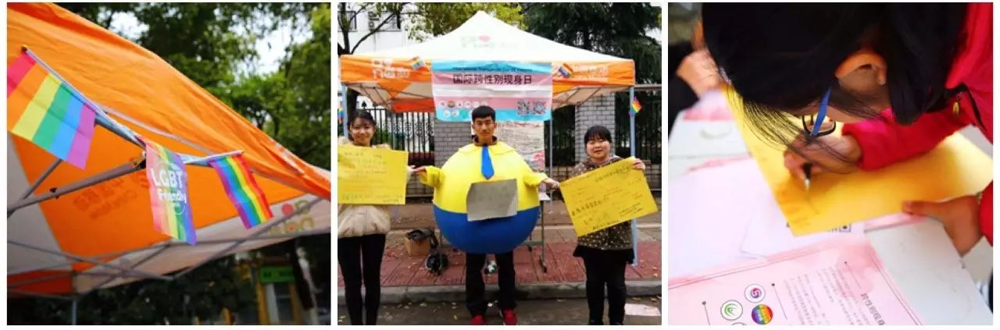
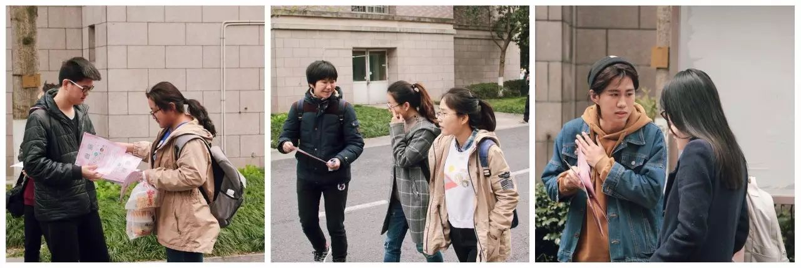
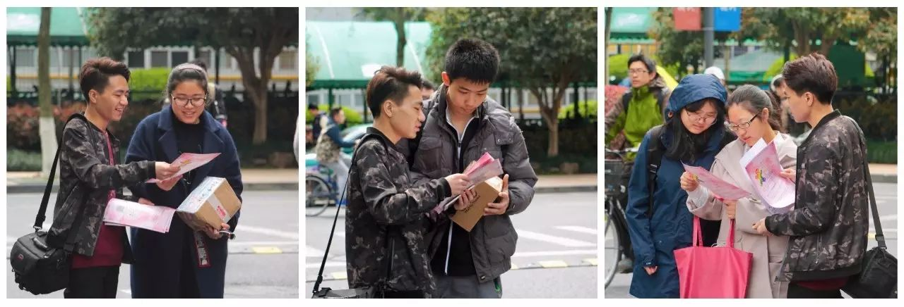
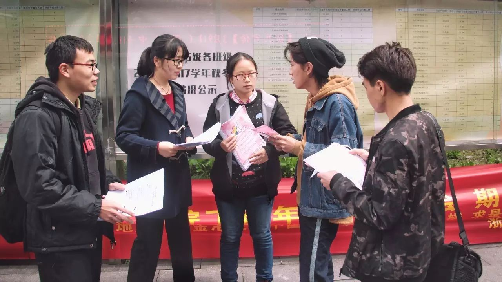

跨性别现身日 | 我们的现身

在开头瓜瓜想要先更正一下之前推文中犯下的错误，跨性别是对性别认同与被指配性别间关系的描述，因此跨性别的人是指性别认同和被指配的性别不同的人。更多具体的内容和解释欢迎查看 http://dwz.cn/kxbkjr
刚刚过去的跨性别现身日，瓜瓜和小伙伴们在浙江的三所高校开展了街头倡导与观影等活动。

@浙江师范大学
我们精心布置了场地
向同学们发放资料
并征集了大家的支持签名

· 浙江师范大学活动现场
@杭州师范大学
我们在仓前校区的食堂门口设置了外场活动
向同学们发放资料
征集大家对跨性别者的支持与祝福
之后还开展了《Transamerica》的观影活动
杭州师范大学的更多活动现场
点击阅读原文查看

· 杭州师范大学活动现场
@浙江大学
由于一些不可控的因素
我们改在了蓝田与丹青门口开展倡导活动
向各位同学发放资料
并向他们介绍跨性别知识

·浙江大学活动现场

阿园：
在听到“跨性别”这个词后，你惊愕的目光、诧异的神情、戏谑的回应与毅然离去的背影，它们都一点一滴参与构成了我们所生活的这个对跨性别者来说远不算友善宽容的社会环境。

·志愿者阿园发传单被制止
丸子：
今天，我参加了一次完美的街头倡导活动。在雨歇的正午，我们在校园里向过往的同学介绍跨性别可见日，并向他们分发附有跨性别概念科普的传单。
在发传单的时候，我发现大家对跨性别这个概念范畴本身并不熟悉，但当我提到金星等知名跨性别者时，大多数人都表示有所耳闻，这表明随着跨性别群体当中的一部分人个体身份的自我呈现变得普遍，大众对跨性别群体的感性认知有所提高。但当我接着向他们介绍跨性别可见日时，他们的反应往往伴随着“与我何干”的茫然无措。“今天是跨性别可见日，这个纪念日的意义是为了提高跨性别群体的可见度……”“但是这和我有什么关系呢？所以需要我做点什么吗？”这一方面体现出我们倡导的形式较为单一，如果能提供一些参与式的小型互动，让参与者能在一些简单但具有声援意义的仪式中体会公众与跨性别群体的联动关系，也许能让他们更加明白“这个纪念日和普通人有什么关系”。

· 向路人介绍跨性别的志愿者丸子
另一方面，如何把反歧视观念从性小众群体内的自娱自乐推广为社会的集体认知，则是这个现象背后更大的需要更多思考的问题。在当天，有一篇推文介绍了六个经常被误用的有关跨性别的概念，话语描述和概念范畴意指的精确化、中性化和反污名化对于导向和矫正我们对于跨性别群体的看法确实具有很重要的意义，但是对几乎完全没有从理性上认识过跨性别群体的公众而言，这样的概念措辞的矫正的确显得有些“没事找事”。我非常认可对概念范畴中话语表达的不断更新，然而我认为相比起来，架设公众与跨性别群体的共情与同理则更显紧迫，且这方面的资源、方法和技术策略手段似乎也较少，需要我们根据倡导实践进行更多的思考和探索。

·向路人介绍跨性别的志愿者张大力
陈sir：
当我和一个交谈颇深的朋友分享我要参加跨性别现身日的时候，她隐约地表示了对于跨性别与同性恋概念之间的模糊。于是我用对被指配性别（原“生理性别”）、性别认同（原“心理性别”）、性倾向进行了解释。她是一个对性少数人群非常友好的人，但即使如此，由于她很少接触过现实生活的性少数，对于性别概念没有很多的了解，更多的只是对于好奇的涉猎。这让我意识到可能身边大多数顺性别，或者异性恋的人，由于本身与社会现有观念的相对协调，忽略了世界上另一种存在的样子。
这更坚定了我想要出来发声的意愿。这次活动并没有跨性别者参加，也不知道有没有跨性别者听到我们的发声，因此，我多少有些顾虑自己所谓的发声是否会给Ta们带来力量，或者说我们的行动，是否是Ta们的诉求。但是，一听到有人说自己并不了解，并且愿意与你讨论，或者有人说出自己的认识而和你进行交流的时候。我都相信，因为有了更多元的声音，我们的社会会变得更加多彩而丰富，更多的孤单且被人群淹没的声音才有更多的呼吸的空间。

·接到传单的路人和志愿者们积极地讨论
今天是InternationalTransgender Day of Visibility，我们翻译为“国际跨性别现身日”，但我更喜欢另一个称呼“国际跨性别可见日”。在这一天，我们不是希望所有的跨性别者站出来，现身于这个透明的社会，因为可预见的目光聚集与非议会将他们伤害。我们希望通过努力让这个社会变得更加多元与包容，让这个社会使Ta们变得可见，变得轻松地表达自己的性别认同而少有人在明地或背地加以讨论。或者“跨性别现身日”其实指每一个愿意支持跨性别者的个体的现身。

·浙江大学活动当天的志愿者们合照
最后，给所有跨性别者。
给那一群，
在最深最深的夜里，
独自彷徨街头，
无所归依的孩子们。
（——《孽子》白先勇）
感谢她她公益对本次活动的支持